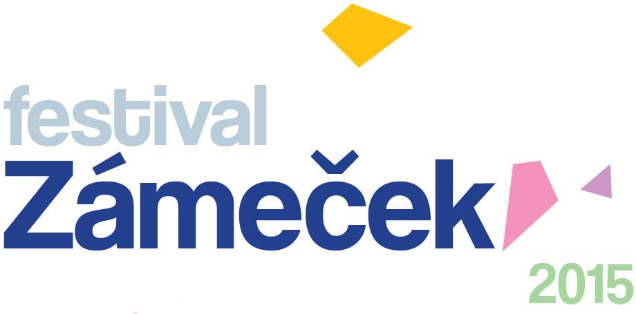
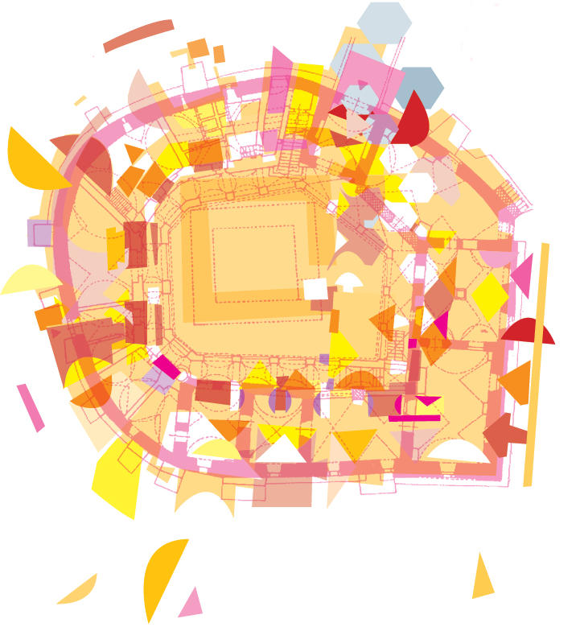

30. května od 12 hodin
ve Středočeském muzeu v Roztokách u Prahy
vstupné dobrovolné
kapely:
Voices (vokální skupina)
Voila! (chanson/jazz)
BBQ (smyčcový nářez)
The Desperate (indie/rock)
Zabelov Group (world music)
Trombenik (klezmer)
Švihadlo (reggae)
Blabuburo (africké rytmy)
doprovodný program:
lidová řemesla
dobrovolní hasiči
turnaj v lakrosu
slackline
taekwondo
výtvarné dílny
lesní ZOO
adrenalin park
divadlo
filmová scéna
divadelní scéna
program pro seniory
žonglér
exhibice na trampolíně
RC modely
čajovna
vegetarianská kuchyně
a mnoho dalšího...